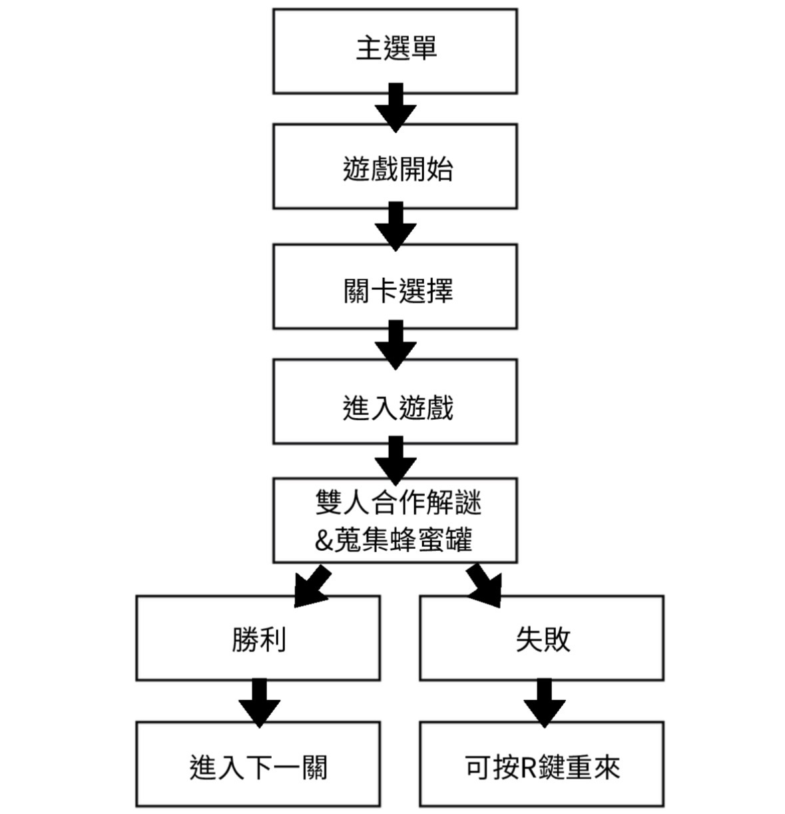
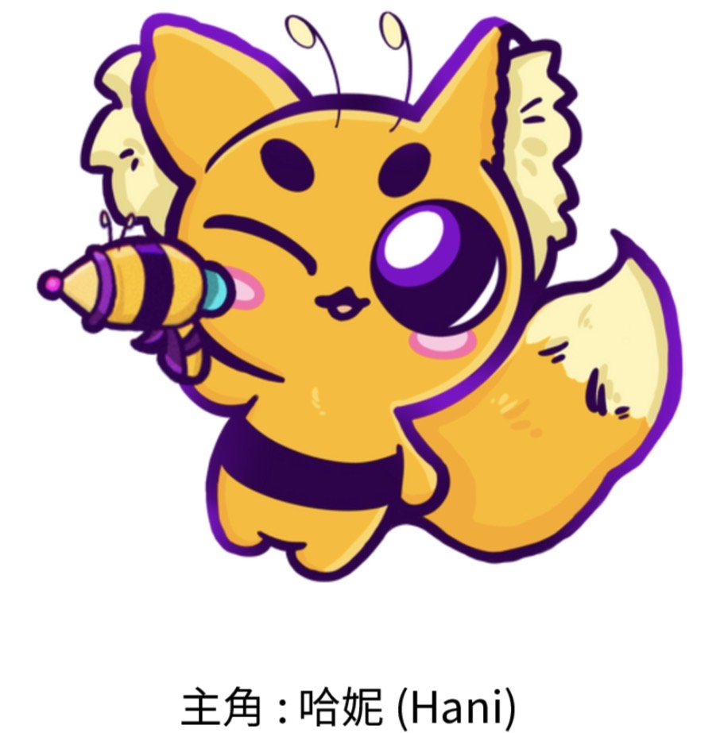
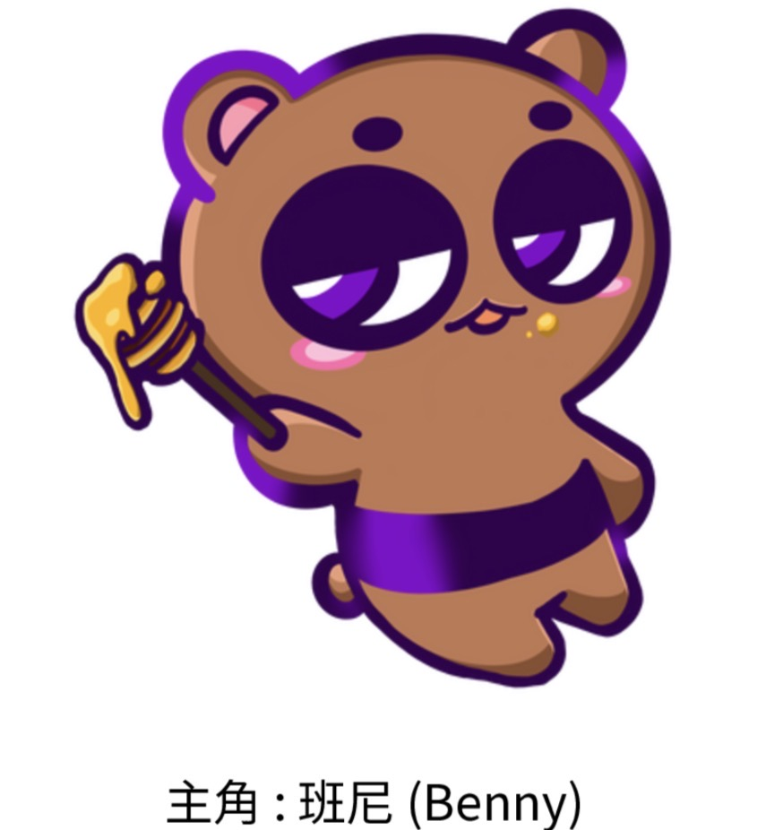
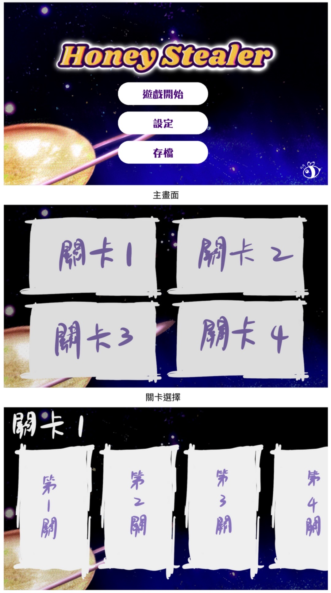
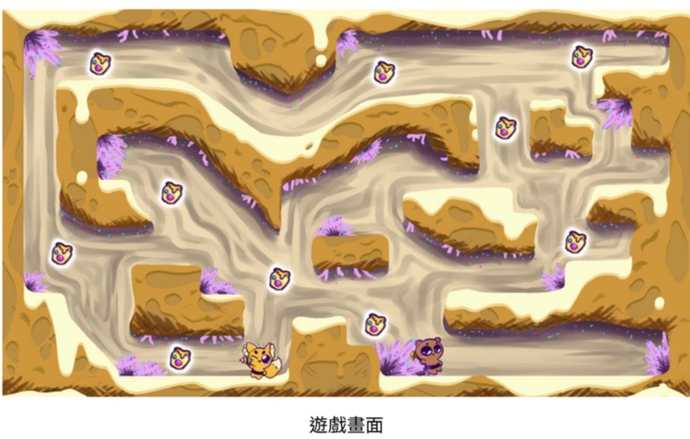
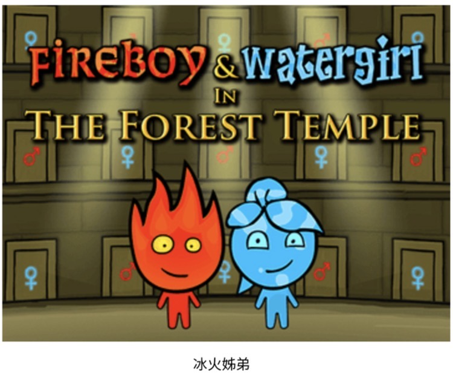
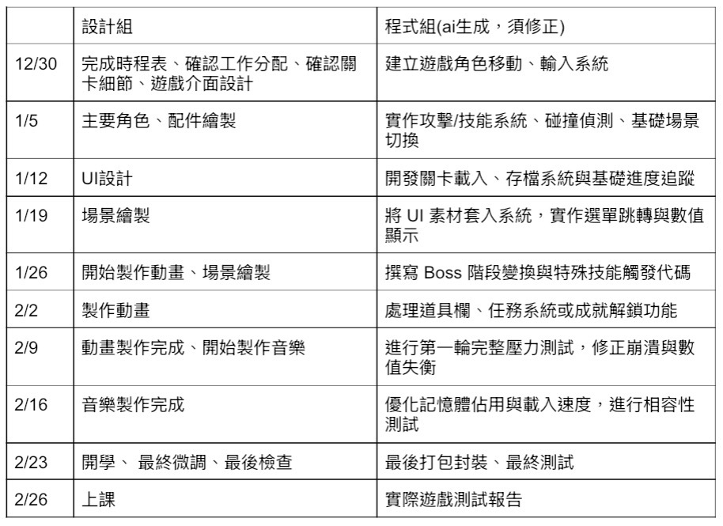

| 首頁 | 個人介紹 | 網站練習 | 個人企畫書 | 團體企畫書 |
| Honey Stealer |
| 蜂蜜劫者 |
| 壹、發想 | 貳、遊戲類型 | 參、故事大綱 | 肆、遊戲流程 | 伍、風格與主角 |
| 陸、參考遊戲 | 柒、時程與分工 | 企劃書(PDF) | 企劃書下載 | 簡報(PPT) |
| 壹、發想 |
| 一、製作動機 |
|
在市面上，多數解謎平台遊戲都圍繞在抽象的機關或傳統元素（火、水、機械等），較少將「甜食、生態、宇宙」結合成完整世界觀。 本遊戲希望以「蜂蜜宇宙」作為核心，打造一個既可愛又具有邏輯深度的雙角色合作解謎遊戲。 製作這款遊戲的動機包含以下幾點： 1. 延續《冰火姐弟》的合作精神 透過兩位能力互補的角色，讓玩家在解謎過程中學會思考「合作」與「分工」，而不是單一角色通關。 2. 將蜂蜜與生態概念轉化為遊戲機制蜂蜜不只是可愛的視覺元素，而是能延伸出「黏性、流動」等多樣玩法，讓世界觀與玩法緊密結合。 3. 打造具有原創風格的宇宙甜點世界 以蜂巢星球、花粉叢等作為場景靈感，建立一個具有高度識別度、適合視覺設計與關卡設計發揮的遊戲世界。 4. 結合可愛外表與需要動腦的核心體驗 表面上是溫柔、甜美的風格，但實際遊玩時需要玩家觀察環境、理解規則、嘗試錯誤，讓遊戲同時吸引輕度與中度玩家 |
| 二、遊戲目的 |
|
玩家在遊戲中將操控兩名來自「蜂蜜宇宙」的角色，穿梭於不同的蜂蜜星域，透過合作解謎，修復逐漸失衡的甜蜜能量系統。 核心遊戲目的： • 合作解謎通關關卡 玩家必須同時運用兩名角色的能力，啟動機關、避開危險、改變環境狀態，才能抵達關卡終點。 • 回收與穩定蜂蜜能量 每個關卡代表一個能量失衡的區域，玩家需要收集或引導蜂蜜能量，使星域恢復原本的秩序。 • 探索蜂蜜宇宙的不同區域 隨著遊戲進行，玩家將前往不同風格的星球，例如：流動性極高的液態蜂蜜區、結晶化的糖巢遺跡、被污染或變質的苦蜜地帶 • 體驗「互相依賴」的成長感關卡設計會讓玩家清楚感受到：任何一個角色單獨行動都無法完成任務 只有理解彼此的能力限制，才能前進。 |
| 三、為什麼玩家會想玩這款遊戲 |
|
玩家會想要遊玩這款遊戲，是因為它以少見的「蜂蜜宇宙」作為主題，結合雙角色合作解謎玩法，帶來新鮮又直覺的遊戲體驗。溫暖可愛的視覺風格與甜蜜、生態、宇宙等元素，讓人第一眼就產生好奇與好感。遊戲延續類似《冰火姐弟》的合作核心，但透過蜂蜜的黏性、流動與變化設計出多樣化的關卡機制，使玩家不需花太多時間學習規則，卻仍能感受到解謎的深度與挑戰。關卡設計強調角色之間的互相依賴，讓玩家在不斷嘗試與配合中獲得成就感。同時，修復蜂蜜宇宙能量失衡的目標，也賦予玩家情感動機，使遊戲不只是進關，而是一段溫柔又有意義的冒險旅程。 |
| 貳、遊戲類型 |
| • 雙角色合作解謎平台遊戲 |
| • 遊戲以雙人為主 |
| • 以電腦pc為主要遊玩器材 |
| • 風格以可愛、蜂蜜宇宙為主 |
| 參、故事大綱 |
|
在名為sugar
space的甜點太空宇宙當中⋯有個名為「蜂蜜星球」的星球地域，蜂蜜星球當中無時無刻湧動著「蜂蜜之泉」，蜂蜜對他們來說相當重要的糧食以及能源來源。 但是突然有一天蜂蜜之泉不再湧動了，於是主角哈妮和班尼自告奮勇出發探險，決定於蜂蜜星球各地冒險蒐集蜂蜜能源，決心再次啟動蜂蜜之泉的湧動⋯⋯。 |
| 肆、遊戲流程 |
| 一、操作方式 |
| • 以WAD鍵為主 |
| • 左右移動為AD鍵、W向上跳躍 |
| • 碰觸蜜蜂罐即可累積蜂蜜數值 |
| • R為重來 |
| • esc為回主選單 |
| • tab為設定 |
| 二、玩法介紹 |
|
本遊戲為一款雙角色合作解謎平台遊戲，玩家需同時操控兩名能力互補的角色，在蜂蜜宇宙的各個關卡中前進。 遊戲以平台跳躍為基礎，結合環境互動與解謎要素，玩家必須觀察關卡中的蜂蜜機制，如黏性、流動與結晶狀態，並善用角色能力改變環境條件，才能突破障礙。每個關卡中分布著多個「蜂蜜罐」作為蒐集目標，玩家需要透過精準操作與角色配合，取得位於高處或危險區域的蜂蜜罐。 蒐集蜂蜜罐不僅影響關卡完成度，也與世界解鎖、獎勵內容相關，鼓勵玩家反覆挑戰與完美通關。透過解謎、合作與蒐集的結合，玩家在前進的同時，逐步修復失衡的蜂蜜宇宙。 |
| 三、流程圖 |
|
 |
| 四、市場分析 |
| S (Strengths 優勢) |
| • 雙角色合作解謎玩法成熟、易上手 |
| • 蜂蜜宇宙主題新穎、視覺可愛吸引人 |
| • 蒐集蜂蜜罐增加重玩與挑戰性 |
| W (Weaknesses 劣勢) |
| • 單人模式操作負擔較高 |
| • 劇情吸引力有限 |
| • 類型玩法在市場上已有類似作品 |
| O (Opportunities 機會) |
| • 獨立遊戲市場持續成長 |
| •合作玩法吸引朋友或情侶一起遊玩 |
| • 世界觀可延伸為周邊或教育應用 |
| T (Threats 威脅) |
| • 同類型合作解謎遊戲競爭多 |
| • 玩家對創新期待高 |
| • 行銷與曝光資源有限 |
| 伍、風格與主角設計 |
| 一、概念設計 |
|
 |
 |
| 二、風格圖 |
|
 |
|
 |
| 陸、參考遊戲 |
|
 |
| 柒、時程與分工 |
| 一、時程表 |
|
 |
| 二、分工 |
|
• 提案監製：林暐倫 • 美術設計 : 林暐倫、劉可婕 • 動畫設計：許紫晶 • 音樂設計：張庭綸 • 程式設計：程恩俞 |
| 返回 |